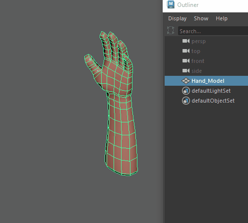
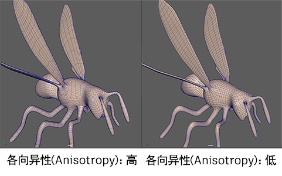
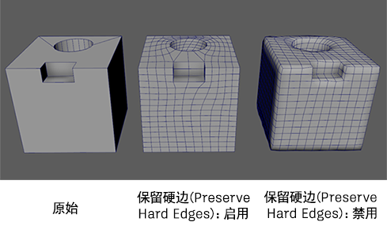

生成整洁的新拓扑，保留选定网格的曲面特征，同时确保所有面都是四边形。使用以下选项可设置在选择“网格 > 重新拓扑”(Mesh > Retopotalogy) >  时发生的情况，或在选中 polyRetopo 节点的情况下打开“属性编辑器”(Attribute Editor)时发生的情况。可以在“输出”(Output)窗口中查看“重新拓扑”(Retopologize)的进度。
时发生的情况，或在选中 polyRetopo 节点的情况下打开“属性编辑器”(Attribute Editor)时发生的情况。可以在“输出”(Output)窗口中查看“重新拓扑”(Retopologize)的进度。
设置(Settings)
以下选项仅在“重新拓扑选项”(Retopologize Options)窗口中可用。
- 保持原始(Keep Original)
- 指定是重新拓扑选定对象的副本（结果网格）还是重新拓扑对象本身（输入网格）。如果启用，“重新拓扑”(Retopologize)将通过对输入网格的副本执行操作来保留输入网格。
- “重新拓扑”(Retopologize)运行后，结果网格将放置在与输入网格相同的位置。结果网格与输入网格同名，输入网格重命名为 <原始名称>_original。在以下示例中，输入网格重命名为 Hand_Model_Original。
提示： 当两个网格都可见时，可以更轻松地编辑输入网格（如定义组件标记），并查看结果网格上动态显示的更新。
- 预处理网格(Preprocess Mesh)
- 优化密集输入网格以提高重新拓扑操作的速度和成功率。此选项专门设计用于三角形计数较高 (100k+) 的输入网格，这些输入网格可能包含拓扑噪波和网格缺陷。它不适用于具有整洁几何体的低分辨率网格。有关详细信息，请参见使用重新拓扑预处理网格的最佳实践。
提示： 预处理可优化密集网格，这需要平滑处理并可能导致丢失细节。禁用“预处理网格”(Preprocess mesh)时，将保留更多细节，但重新拓扑操作可能需要较长时间才能完成。
- 扫描网格以查找问题(Scan mesh for issues)
-
启用此选项后，将检查输入网格是否存在可能会阻止“重新拓扑”(Retopologize)成功运行或对结果产生不利影响的潜在问题。如果检测到问题，将显示“潜在重新拓扑问题疑难解答”(Troubleshoot Potential Retopologize Issues)对话框，其中包含警告和建议的疑难解答步骤。有关每个警告的详细信息，请参见重新拓扑问题疑难解答。
面数选项(Face Count Options)
- 目标面数(Target Face Count)
-
重新拓扑网格的所需面数。这不是硬性计数，而更多的是“重新拓扑”(Retopologize)尝试达到的目标。
“重新拓扑”(Retopologize)算法优先考虑输入网格的细节，而不是面数。例如，如果尝试重新拓扑高度细节化的网格并将“目标面数”(Target Face Count)设置得非常低，则该算法会尝试保留尽可能多的细节，而生成的面数可能不会如预期低。
提示： 如果您优先考虑达到较低的“目标面数”(Target Face Count)，则可以启用“预处理网格”(Preprocess Mesh)，然后尝试再次运行“重新拓扑”(Retopologize)。有关详细信息，请参见使用重新拓扑预处理网格的最佳实践。 - 容差(Tolerance)(%)
-
“目标面数”(Target Face Count)的可接受误差范围 (%)。非常低的值 (< 10) 可能会导致性能低下。较高的值可能会导致面数不太接近目标设置。
拓扑选项(Topology Options)
- 拓扑规则性(Topology Regularity)
-
确定结果中奇点（除 4 条连接边外的顶点）的数量。当设置为 0 时，结果对曲面敏感，产生更多奇点。当设置为 1 时，则产生的奇点较少，并且结果可能会平滑精细的细节。
- 面均匀性(Face Uniformity)
-
表示面的总体大小和形状。当设置为 0 时，将导致大小变化，区域的曲率越高，面越小。当设置为 1 时，面的大小更均匀（不考虑曲面曲率）。
- 各向异性(Anisotropy)
-
可根据曲面的方向曲率自适应。当设置为 0 时，面拉伸较小，并呈方形。当设置为 1 时，面会进一步拉伸以适应每个曲率方向的曲面。注意：如果均匀性设置为 1，则各向异性将没有任何效果。

特征保留选项(Feature Preservation Options)
- 保留: 硬边(Preserve: Hard edges)
-
启用此选项后，使用输入网格上的显式硬边（使用网格显示 > 硬化边(Mesh Display > Harden Edges)定义的硬边）来影响重新拓扑的网格上的特征保留。因此，硬边周围的特征（如褶皱、眉毛、嘴唇等）将更精确地转化为新网格。但是，过多硬边会导致重新拓扑算法运行时间非常长。禁用此选项会将所有边视为软边。请参见保留重新拓扑网格的区域。注： 重新拓扑网格的分辨率（目标面数(Target Face Count)）将确定输入网格形状和边流的保留程度。例如，较低的“目标面数”(Target Face Count)值会保留输入网格的常规形状，而较高的“目标面数”(Target Face Count)值生成的网格会更接近输入网格。
- 保留: 按角度保留边(Preserve: Edges by angle)
-
启用此选项后，将基于指定的角度容差保留边。如果相邻面之间的角度超过指定的角度容差，将保留面之间的边。 - 如果网格包含的边在视觉上不是硬边（即在网格内部），或者您不想显式定义硬边，请使用此选项。请参见保留重新拓扑网格的区域。
- 保留: 边组件标记(Preserve: Edge component tags)
-
启用此选项后，polyRetopo 节点在输入网格上搜索指定的边组件标记，并在结果网格上将它们用作影响物。这样，您可以保留边，而不会使其变为硬边。有关详细信息，请参见为几何体指定组件标记和使用组件标记保留重新拓扑网格的区域。 - 文本框支持以逗号分隔的边组件标记列表。此外，它还支持 <名称>* 格式的通配符。
注： 使用边组件标记来保留特征对于引导特定区域中结果网格的边流非常有用。与“保持原始”(Keep Original)选项结合使用时，可以在输入网格的组件标记中添加和移除边，并查看重新拓扑的结果网格上动态显示的更新。
对称(Symmetry)
- 对称(Symmetry)
- 允许您使用以下选项在网格的两侧创建均匀边流：
- 轴位置(Axis position)
- 用于为选定对象选择对称平面。可从下列选项中选择：
- 对象(Object)：相对于选定对象的轴位置和方向剪切和填充网格
- 边界框(Bounding Box)：相对于包含选定对象的不可见立方体的一侧剪切和填充网格
- 世界(World)：相对于世界空间原点剪切和填充网格
- 轴(Axis)
- 用于选择执行对称操作的轴和方向。例如，选择“+X 到 -X”(+X to -X)时，将从 +X 轴剪切拓扑并将其填充到 -X 轴。
- 可从下列选项中选择：
- +X 到 -X(+X to -X)
- -X 到 +X(-X to +X)
- +Y 到 -Y(+Y to -Y)
- -Y 到 +Y(-Y to +Y)
- +Z 到 -Z(+Z to -Z)
- -Z 到 +Z(-Z to +Z)
有关详细信息，请参见使用对称重新拓扑网格。